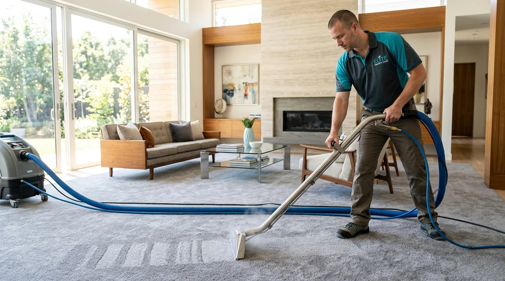

From Rs. 999
Carpet steam cleaning
Deep extraction lifts embedded grit, everyday grime and tracked-in soil from fitted carpets. We inspect fibers, pre-treat stains and rinse away residue. Great for family living rooms, rental move-outs and high-traffic spaces.
Book this service